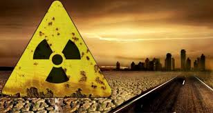

TIPOS DE CONTAMINACIÓN
1. Contaminación atmosférica
La más conocida, es el tipo de contaminación que surge de la liberación de partículas de sustancias químicas a la atmósfera. También conocida como polución, es el tipo de contaminación que afecta a través del aire. Uno de los contaminantes más conocidos en este sentido son el CO2, el metano y el humo proveniente de la combustión.2. Contaminación hídrica
Se trata del efecto de la emisión y liberación en las aguas de sustancias contaminantes. Se dificulta o altera la vida y el uso normativo, haciéndola no potable. Habitualmente esta contaminación es de origen industrial. Incluye la contaminación marítima, la cual haría referencia a la contaminación de los mares y océanos por la misma causa.
3. Contaminación del suelo y del subsuelo
Provocada por la filtración de sustancias en el suelo, genera alteraciones físicas y químicas en éste que hacen que por ejemplo resulte inhabitable, se contaminen las aguas subterráneas o se imposibilite el crecimiento de vida en el área.4. Contaminación radiactiva
Se trata de uno de los tipos de contaminación más peligrosos y agresivos con la vida. Es producida por la liberación de material radiactivo y tiene efecto en cualquier superficie. Suele derivarse de la acción humana, como el vertido de residuos o desastres en plantas de energía nuclear como el de Chernobyl.
5. Contaminación térmica
Uno de los tipos de contaminación menos conocidos, es generado por el cambio de temperatura en el entorno o en diferentes medios debido a la actividad humana.


 3
3 4
4 5
5 6
6 7
7